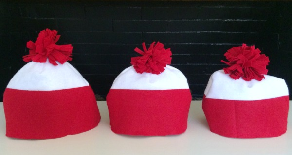
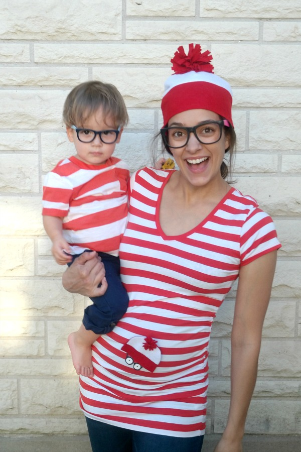

Where's Waldo Costume
Creating a Where's Waldo costume is one of the most popular and recognizable costume choices for Halloween, parties, and cosplay events. The iconic red and white striped outfit is instantly identifiable and relatively easy to put together. Whether you're planning a DIY costume or looking to purchase official merchandise, this guide will help you create the perfect Waldo look.
DIY & Group Costume Ideas
Where's Waldo is one of the easiest and most fun choices for group and family costumes! Drawing inspiration from the popular guide by C.R.A.F.T. (Creating Really Awesome Fun Things), here is how you can put together a coordinated Waldo family or group look on a budget (for more options, see the Where's Waldo Costume Guide):
DIY Waldo & Wenda Beanies

You don't need advanced sewing skills to make the signature red and white striped beanies. If you don't have a sewing machine, a hot glue gun works wonderfully for bonding felt panels!
- Materials needed: Red felt, white felt, and either a hot glue gun or sewing machine.
- Rough sizing guidelines (at the base):
- Toddler size: 10 inches at the base
- Women's size: 11 inches at the base
- Men's size: 12 inches at the base
- Tip: Make the hats slightly larger than you think you need; you can always pin them or glue them smaller.
Reusable Waldo T-Shirts
One of the best benefits of a Where's Waldo group costume is that the components are practical and reusable. High-quality cotton striped shirts can be worn as regular clothing long after Halloween is over!
Pregnant Waldo / Wenda Costume Idea

If you're expecting, you can easily turn your pregnant belly into a cute peek-a-boo baby Waldo or Wenda:
- Create a mini flat red and white beanie using felt scraps and hot glue. Secure it to the belly area of your t-shirt with a safety pin.
- Draw a pair of classic black round glasses on white cardstock using a black marker. Cut them out and tape or pin them to the shirt right below the mini beanie to make a cute baby Waldo on your belly.
Accessories to Enhance Your Costume
Take your Waldo costume to the next level with these additional touches:
- Backpack: Carry a small backpack to emphasize Waldo's traveler persona
- Camera: A vintage camera prop adds to the explorer aesthetic
- Binoculars: Perfect for the "searching" theme
- Map: Carry a rolled-up map for extra authenticity
- Waldo book: Bring a Where's Waldo book as a fun prop and conversation starter
Final Costume Checklist
Before heading out, make sure you have:
- ✓ Red and white striped long-sleeve shirt
- ✓ Blue jeans
- ✓ Red and white striped beanie with pom-pom
- ✓ Round black glasses
- ✓ Walking stick (optional)
- ✓ Comfortable shoes for walking
- ✓ Your best adventurous smile!